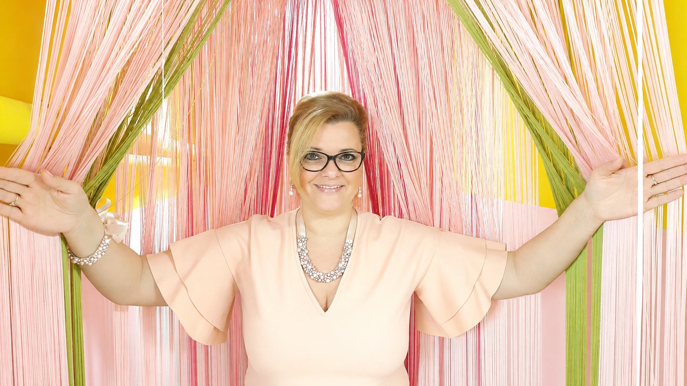
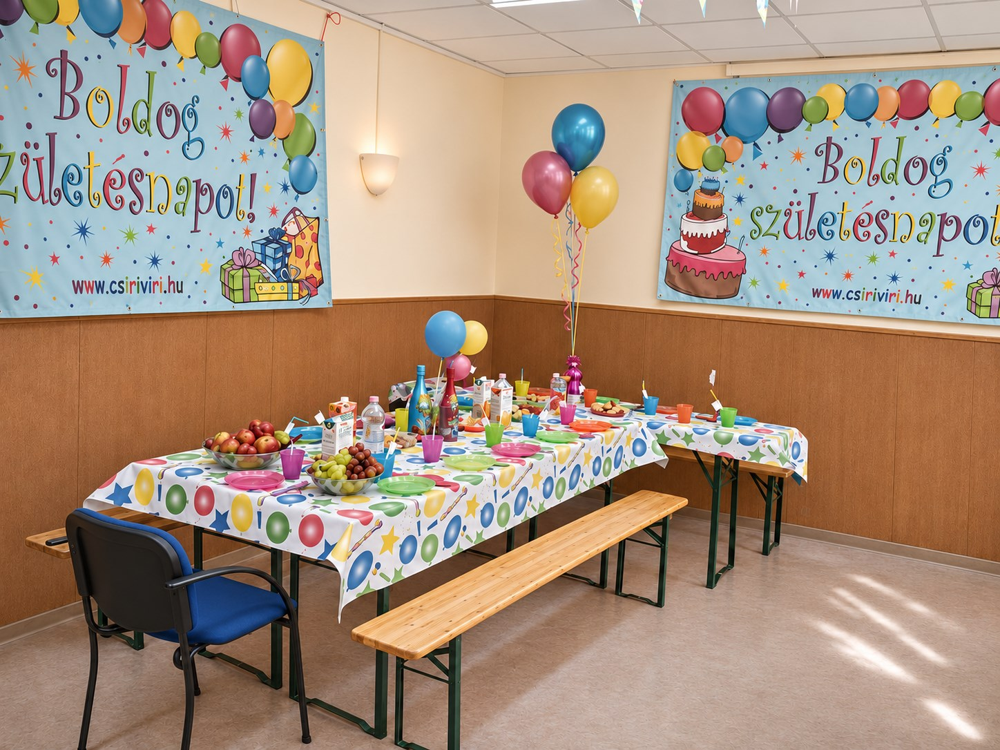

Csiriviri szolgáltatások
Szülinapi zsúr
Vidám játékokkal és élményekkel teszem emlékezetessé a gyerekek nagy napját.
A programot a gyerekek életkorához, a létszámhoz és a helyszínhez igazítom. Írd meg, mikorra tervezitek az ünneplést, hány gyermek vesz részt, és milyen elképzeléseitek vannak.
Ajánlatot kérek
Szülinapi zsúr
Milyen lehet a szülinap?
Közös játékok, csapatversenyek, ügyességi feladatok, kincskeresés és kézműveskedés közül válogathatunk. A programot a gyerekek életkorához, létszámához és a helyszínhez igazítom. Arcfestés és csillámtetoválás is kérhető előzetes egyeztetéssel.
Szülinapi zsúr
A közös játék mindig közel állt hozzám
Évi vagyok, a Csiriviri megálmodója. Óvodapedagógusként mindig örömmel foglalkoztam gyerekekkel. Később egy kultúrházban kezdtem gyerekzsúrokat és tematikus programokat szervezni.
Szeretem, amikor a gyerekek együtt játszanak, és az ünnepelt is igazán a figyelem középpontjába kerül. Ezért minden alkalmat az adott társasághoz igazítok.

Szülinapi zsúr
Így tervezzük meg együtt a szülinapot
Megírod a részleteket
Az időpontot, a helyszínt, a gyerekek életkorát és létszámát.
Átbeszéljük az ötleteket
Kiválasztjuk, milyen játékok és foglalkozások illenek hozzátok.
Egyeztetjük az ajánlatot
Megbeszéljük az időtartamot és a díjat.
Jöhet az ünneplés
Az előre megbeszélt programmal érkezem a helyszínre.
Szülinapi zsúr
Saját otthonotokban vagy más választott helyszínen
Otthoni, kerti vagy más helyszínen tartott ünnepléshez is igazítható a program. A lehetőségeket és a szükséges helyet előre egyeztetjük.


Szülinapi zsúr
Díjak és kitelepülés
10 000–15 000 Ft / óra
Legalább 2 órás alkalom.
Legalább 3 órás kitelepülés.
A program, a kért kiegészítések és a helyszín alapján egyeztetjük a végleges díjat. Kiszállási díj is felmerülhet.
Rólam mondtátok
Kedves szavak, valódi élmények
Két visszajelzés a szülinapi élményekről.
„Mindenkitől azt kaptuk, hogy jól érezték magukat a gyerekek – de szerintem látszott is. Kitti nagyon boldog azóta is a fellegekben száll. Remélem még találkozunk!”Szülői visszajelzés · Gyerekzsúr
„Szeretném megköszönni a csodás arcfestést! 🥰 A gyerekek nagyon élvezték, mindenki nagy örömmel választott a szebbnél szebb mintákból, este le sem akarták mosni. ❤️ Nagyon kedves, ügyes és kreatív vagy, igazán színesebbé és vidámabbá tetted a születésnapi zsúrt! Köszönjük szépen, szívből ajánlunk!”Szülői visszajelzés · Arcfestés
Gyakori kérdések
Gyakori kérdések
Milyen korú gyerekeknek állítható össze program?
A játékokat a gyerekek életkorához és a társaság összetételéhez igazítom. Írd meg, hány évesek lesznek a résztvevők.
Hol tarthatjuk a zsúrt?
Otthon, kertben vagy más választott helyszínen is. A hely adottságait előre átbeszéljük.
Mennyi időre érdemes tervezni?
Budapesten legalább 2, a környéken legalább 3 órára. A megfelelő időtartamot a program alapján egyeztetjük.
Kérhetünk arcfestést vagy csillámtetoválást is?
Igen, előzetes egyeztetéssel kiegészíthető velük a program.
Mit írjak meg az ajánlatkéréshez?
A dátumot, a helyszínt, a gyerekek életkorát és létszámát, valamint a kívánt programokat.
Kapcsolat
Tervezzük meg együtt a szülinapot!
Írd meg, mikor és hol ünnepeltek, hány évesek a gyerekek, és hányan lesznek. A programötleteidet is szívesen olvasom.